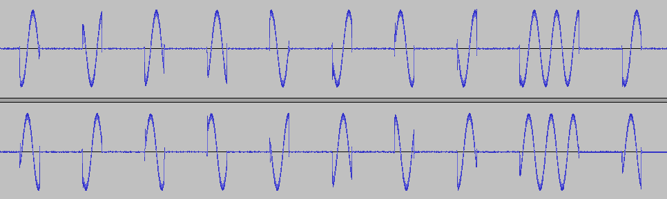

433MHz Radio Modules
I wanted to get some outside temperature readings logged to my raspberry pi for plotting charts, e.g. one thing I'd like to do is monitor both the internal and external temperatures to help arriving at an estimate for building heat loss over the year.
One option is one wire thermometers, such as the widely available DS18b20. I have some of those and they are indeed easy to get working. However I don't really want to be drilling holes through walls, etc. So I looked into radio based options.
One option here is to buy an off-the-shelf weather station, I opted for the ClimeMET CM9088 Digital Wireless Weather Station. For £35 I received a master station with a good sized LCD display showing all salient info, and a remote module. The remote module is fairly compact, looks mostly weather proof and has a small LCD display showing temperature and humidity at the unit; It takes a couple of AAA batteries and it's claimed those will last 24 months. The unit periodically transmits temperature and humidity somewhere around 433Mhz.
I've mounted the remote unit outside in a location that is shaded and sheltered from rain. The master unit reports when it has received a signal with a symbol on the LCD display (and of course the temp and humidity update), so I was able to walk around the house to check signal range - basically there were no problems getting a signal anywhere, even across the garden and through several brick walls!
The next step was to try an understand the modulation being used and to find a suitable receiver module that I could link to a raspberry pi. Google came up with some useful links, but the main thing to note is that the data is modulated using on-off keying (OOK). A useful test to do at this point is to use an SDR (Software Define Radio) USB dongle to tune in to the signal. I have a NooElec NESDR Mini 2 USB RTL-SDR & ADS-B Receiver Set, RTL2832U & R820T2 Tuner. I'm using a Windows 7 PC so I was able to download SDR# to listen in. The signal arrives as a short single burst every 48 seconds, a burst lasts about 100ms
SDR# allows recording of audio, however we must choose an appropriate modulation scheme for the receiver. Here's the audio we get when the receiver is set to AM modulation:
It's perhaps not immediately obvious what is going on, but the highs correspond to the 'On' state, and the lows the 'Off' state. The 'offs' appear to be below the mid line, but that's an effect in the receiver circurty (and/or receiver software), given a short time the signal drifts back to the mid line as it does at the far right of the plot. The on/off nature of the signal is more obvious with the SDR modulation set to 'raw'. Here are the first few data bits from another burst:
Note how there are two different durations of 'On' signals, a short 'On' lasting about 0.5ms, and a long 'On' lasting about 1.5ms. This is because the ClimeMEt unit is using 'On' duration to differentiate between a binary 0 and a 1. By comparing the patterns of long and short bursts with the reported corresponding temperature and relative humidity I was quickly able find where the temperature and RH values are encoded and which way around the binary 0's and 1's are encoded. short=1 and long=0. So the bit sequence for the for plot #1 is:
| nibble index: | 0 | 1 | 2 | 3 | 4 | 5 | 6 | 7 | 8 | 9 | 10 | 11 |
| nibble bits: | 1111 | 1111 | 0100 | 1111 | 0001 | 0000 | 1101 | 1000 | 0011 | 1101 | 1011 | 0000 |
In total there are 48 bits, which I've broken into 12 groups of 4 bits (12 nibbles). Recall that this sequence corresponded
to a temperature of 21.6C and RH of 61%. These appear to be trivially encoded,
nibbles 6 & 7 = 11011000 = 216 decimal. So the temp appears to be integer encoded as 10ths of a degree celsius.
nibbles 8 & 9 = 00111101 = 61 decimal.
The leading bits are likely just fixed preamble that are used to determine that there is a valid signal. In
the manual there is also mention of some kind of ID that is learned when the units are first switch on, I didn't
really understand but I think the remote unit generates a new ID each time it's powered on and the master unit learns
the first ID it receives, so if your neighbour were to set up a second remote unit your mast erunit would ignore
your neighbour's - that's partly speculation, but the point is that I think there's an ID in there somewhere. The
trailing 8 bits (nibbles 10 and 11) seem to change so are likely some kind of checksum. A checksum is quite important
to allow noise signals to be discarded, otherwise the master unit might report some weird numbers when the signal
is weak or there is interference.
 2011 Colin Green.
2011 Colin Green.